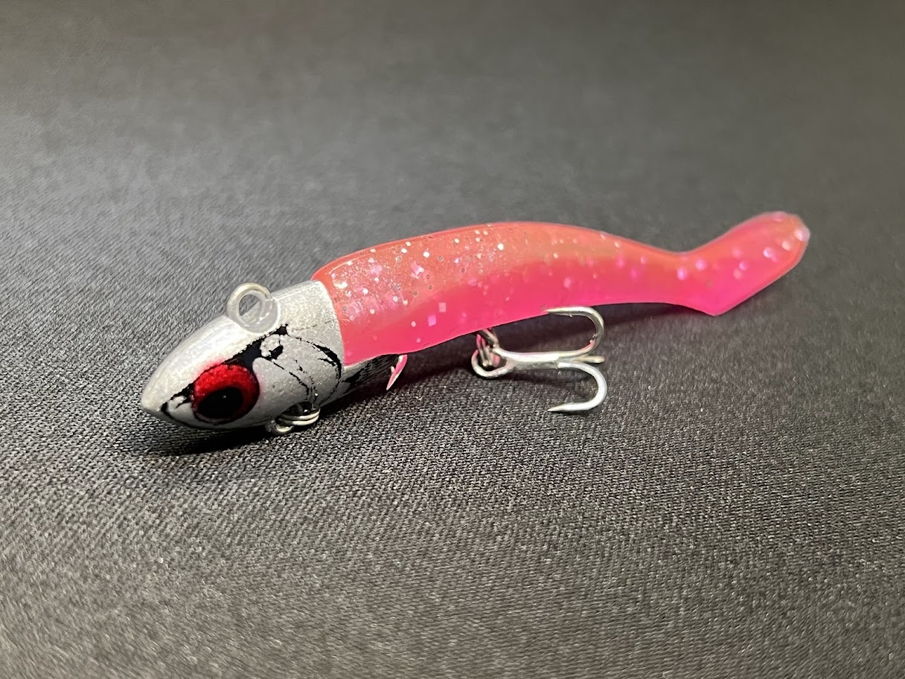
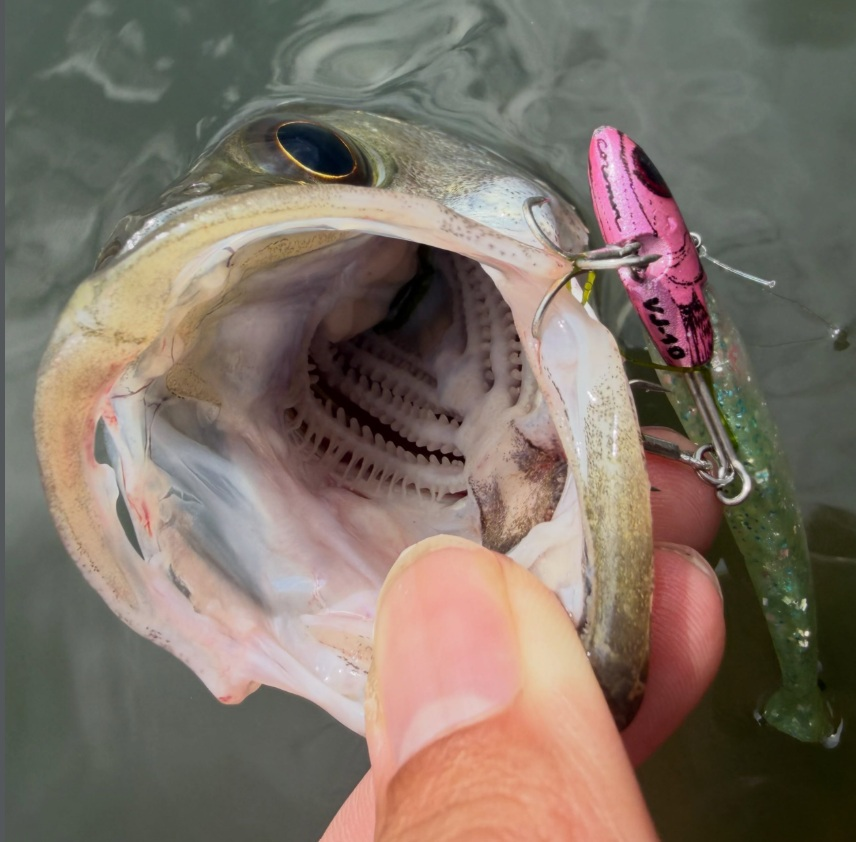
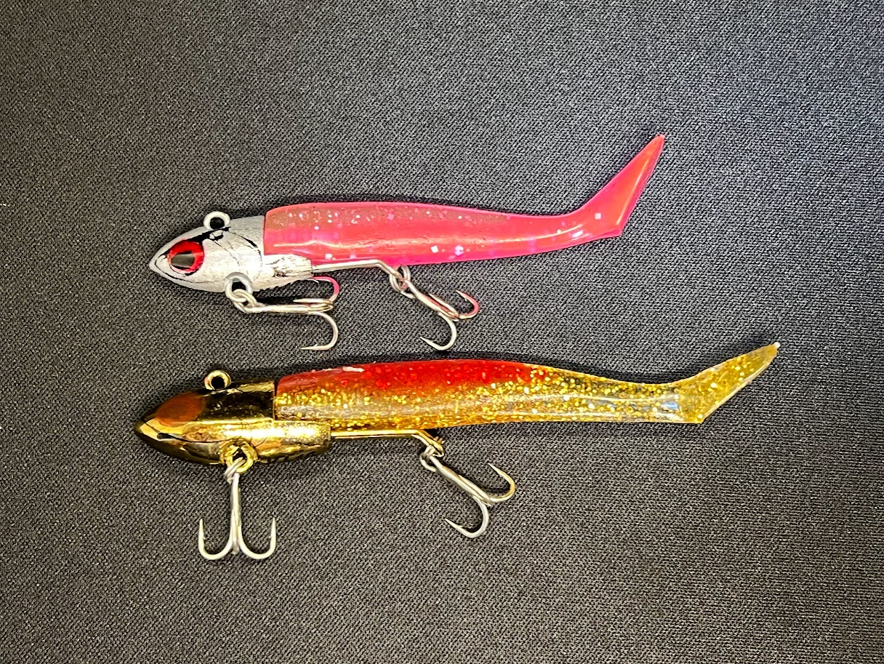

VJ-10（バイブレーションジグヘッド10）
VJ-10（VIBRATION JIGHEAD 10）はCOREMAN（コアマン）のバイブレーションジグヘッドです。
シーバスゲームの絶対的定番「VJシリーズ」に、待望の最軽量モデルが新登場。「エサルアーを超えるエサルアー」をキャッチコピーに、これまでVJ-16でも通せなかったより浅い激シャローエリアを攻略できる新戦力です。

スペック
- メーカー
- COREMAN（コアマン）
- タイプ
- バイブレーションジグヘッド（ジグヘッド＋ワーム）
- ウェイト
- 10g(ジグヘッド)＋2g(ワーム)
- 全長
- 80㎜
- フック
- フロント#10／リア#12
- 装着ワーム
- アルカリシャッド 65mm
- ターゲット
- シーバス・青物・フラットフィッシュ
- 価格
- 1540円(税込)
- 発売
- 2026年7月26日
▼今すぐチェック
VJ-10の特徴
「エサルアーを超えるエサルアー」VJ最軽量が拓く激シャローの新領域
-
VJシリーズ最軽量10gで激浅シャローを攻略
VJ-16でも沈みすぎてしまった激浅エリアや、シャローフラット・干潟の薄い水深を、根掛かりを恐れずにこれまで引けなかったレンジを狙える。
-
ワームが振動するVJ唯一無二の食わせ能力はそのまま
経験によって導き出されたジグヘッドデザインと、装着するコアマンワームのマッチングでボディ全体が絶妙に振動するVJアクション。
-
藻の上・表層早巻きに強い設定
実釣でも藻の上でしっかり掛けて攻略する使い方が紹介されている。スローよりも表層の早巻きで口を使わせられる設定。
VJ-10の使い方
基本はただ巻き。着水後すぐに巻き始め、表層直下をキープしながらリトリーブする。VJ-10は「ゆっくり巻くより表層の早巻きの方がよく食う」場面が多いのが特徴で、まずは速めのただ巻きから試すのがおすすめ。もちろんスローリトリーブでも食うため、反応を見ながら速度を調整しよう。藻や沈みストラクチャーの上を通す時は、レンジをできるだけ上にキープして根掛かり・藻がらみを回避する。
VJ-10の得意な状況
水深の浅いシャローフラット・干潟・河川の浅場・藻場周りが最大の出番。これまでVJ-16では沈みすぎて攻めきれなかった激浅エリアで、根掛かりを恐れず広範囲をサーチできる。夏場の浅いポイントや、シャローに差してきたシーバスを表層早巻きで狙う場面に特に強い。VJシリーズの中でも「一番上のレンジ」を担当する最軽量モデルとして、他のウェイトと組み合わせてレンジを刻む釣りの起点になる。
ワンポイント
VJ-10はまず表層早巻きから徐々にリトリーブスピードを落としていくと、魚のキャッチ率が上がります。
VJシリーズ全般に言えますが、スイムバランスはワームの刺し方で調整できるため、定期的に見直すのも釣果アップのポイントです。

画像出典:コアマン公式INSTAGRAM
VJシリーズの使い分け

| モデル | ウェイト | 得意なレンジ・場面 |
|---|---|---|
| VJ-10 | 10g | 激浅シャロー・藻場・表層早巻き（シリーズ最軽量） |
| VJ-12 | 12g | 10gと16gの中間・浅め〜中層のつなぎ役 |
| VJ-16 | 16g | 水深3m前後・オールラウンド（シリーズの基準） |
| VJ-22 | 22g | 飛距離・やや深いレンジ・流れの強い場所 |
| VJ-28 | 28g | 最長飛距離・最深レンジキープ・大場所/ボート |
VJ-10の追加で、シリーズは「激浅から深場まで」をウェイト選択だけでシームレスにカバーできるようになった。同じアクション・同じ食わせ能力のままレンジだけを刻めるのがVJシリーズ最大の強みだ。
VJ-10に似ているルアー
- VJ-12（コアマン）——VJ-10とVJ-16の中間を埋めるウェイト。もう少しだけレンジを入れたい・飛距離が欲しい時に、同じVJアクションのまま持ち替えられる最も近い兄弟モデル。
- ジョルティミニ8g（ブルーブルー）——ジグヘッド8g・3インチの食わせ系フォローベイト。重心移動式でよく飛び、リトリーブでローリングする点はVJと近いが、こちらはバイブレーションではなくロール主体という違い。
- RJ-10（コアマン）——同じコアマンの10gジグヘッド。ハイピッチなドリルロールで誘うローリング特化モデル。VJ-10がバイブレーション、RJ-10がローリングと、同ウェイトでアクションを使い分けられる。